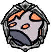

Slobbering Husk
 The body of a bug, completely consumed by infection. Spits corrosive liquid.The infection that swept through Hallownest so long ago... they say that the harder you struggled against it, the more it consumed you.
The body of a bug, completely consumed by infection. Spits corrosive liquid.The infection that swept through Hallownest so long ago... they say that the harder you struggled against it, the more it consumed you.

x 17
x 25
 x 15
x 15Infected version of the Leaping Husk, which replaces many of them once the Forgotten Crossroads become infected. It is similar in size to the Leaping Husks, and is the weakest of the infected enemies.

 The Slobbering Husk will launch three blobs of infection in a tall arch towards the player, before taking a few steps towards them and repeating this attack.
Slobbering Husks are the least threatening of the infected versions of basic enemies. It is easiest to defeat them by closing the distance and attacking with the nail while remaining inside the arch of their infection projectiles.
The Slobbering Husk will launch three blobs of infection in a tall arch towards the player, before taking a few steps towards them and repeating this attack.
Slobbering Husks are the least threatening of the infected versions of basic enemies. It is easiest to defeat them by closing the distance and attacking with the nail while remaining inside the arch of their infection projectiles.
Slobbering Husks can be found the following areas: